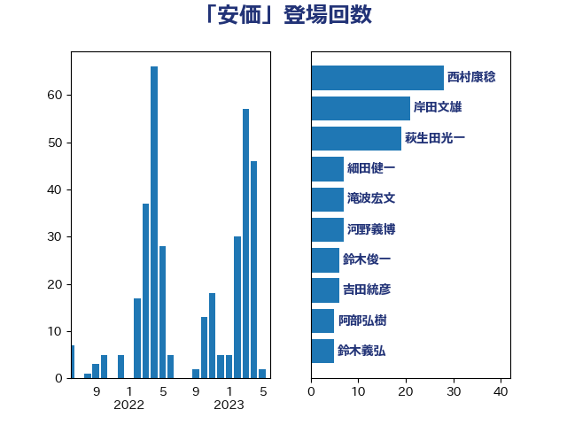

単語「安価」

| 西村康稔 | 自由民主党 | 28 回 |
| 岸田文雄 | 自由民主党 | 21 回 |
| 萩生田光一 | 自由民主党 | 19 回 |
| 細田健一 | 自由民主党 | 7 回 |
| 滝波宏文 | 自由民主党 | 7 回 |
| 河野義博 | 公明党 | 7 回 |
| 鈴木俊一 | 自由民主党 | 6 回 |
| 吉田統彦 | 立憲民主党 | 6 回 |
| 阿部弘樹 | 日本維新の会 | 5 回 |
| 鈴木義弘 | 国民民主党 | 5 回 |
| 川合孝典 | 国民民主党 | 5 回 |
| 前川清成 | 日本維新の会 | 4 回 |
| 中谷一馬 | 立憲民主党 | 4 回 |
| 阿部知子 | 立憲民主党 | 3 回 |
| 足立康史 | 日本維新の会 | 3 回 |
| 芳賀道也 | 国民民主党 | 3 回 |
| 福岡資麿 | 自由民主党 | 3 回 |
| 山口晋 | 自由民主党 | 3 回 |
| 大野泰正 | 自由民主党 | 3 回 |
| 堤かなめ | 立憲民主党 | 3 回 |
| 和田有一朗 | 日本維新の会 | 3 回 |
| 高橋千鶴子 | 日本共産党 | 2 回 |
| 鈴木英敬 | 自由民主党 | 2 回 |
| 鈴木敦 | 国民民主党 | 2 回 |
| 金城泰邦 | 公明党 | 2 回 |
| 西田実仁 | 公明党 | 2 回 |
| 藤木眞也 | 自由民主党 | 2 回 |
| 笠井亮 | 日本共産党 | 2 回 |
| 福島伸享 | 無所属 | 2 回 |
| 石川昭政 | 自由民主党 | 2 回 |
| 畦元将吾 | 自由民主党 | 2 回 |
| 玉木雄一郎 | 国民民主党 | 2 回 |
| 梅村みずほ | 日本維新の会 | 2 回 |
| 柳ヶ瀬裕文 | 日本維新の会 | 2 回 |
| 徳永エリ | 立憲民主党 | 2 回 |
| 後藤茂之 | 自由民主党 | 2 回 |
| 山崎誠 | 立憲民主党 | 2 回 |
| 寺田静 | 無所属 | 2 回 |
| 宮口治子 | 立憲民主党 | 2 回 |
| 倉林明子 | 日本共産党 | 2 回 |
| 伊藤渉 | 公明党 | 2 回 |
| 伊藤俊輔 | 立憲民主党 | 2 回 |
| 上田英俊 | 自由民主党 | 2 回 |
| 高良鉄美 | 無所属 | 1 回 |
| 高橋英明 | 日本維新の会 | 1 回 |
| 高橋光男 | 公明党 | 1 回 |
| 高木陽介 | 公明党 | 1 回 |
| 高市早苗 | 自由民主党 | 1 回 |
| 青木愛 | 立憲民主党 | 1 回 |
| 青山繁晴 | 自由民主党 | 1 回 |
| 長峯誠 | 自由民主党 | 1 回 |
| 鈴木憲和 | 自由民主党 | 1 回 |
| 金子恵美 | 立憲民主党 | 1 回 |
| 重徳和彦 | 立憲民主党 | 1 回 |
| 遠藤敬 | 日本維新の会 | 1 回 |
| 道下大樹 | 立憲民主党 | 1 回 |
| 藤巻健太 | 日本維新の会 | 1 回 |
| 緑川貴士 | 立憲民主党 | 1 回 |
| 紙智子 | 日本共産党 | 1 回 |
| 穂坂泰 | 自由民主党 | 1 回 |
| 石原宏高 | 自由民主党 | 1 回 |
| 石井正弘 | 自由民主党 | 1 回 |
| 石井拓 | 自由民主党 | 1 回 |
| 石井啓一 | 公明党 | 1 回 |
| 片山さつき | 自由民主党 | 1 回 |
| 渡辺猛之 | 自由民主党 | 1 回 |
| 清水貴之 | 日本維新の会 | 1 回 |
| 浜野喜史 | 国民民主党 | 1 回 |
| 浜田靖一 | 自由民主党 | 1 回 |
| 津島淳 | 自由民主党 | 1 回 |
| 河野太郎 | 自由民主党 | 1 回 |
| 池畑浩太朗 | 日本維新の会 | 1 回 |
| 櫛渕万里 | れいわ新選組 | 1 回 |
| 横山信一 | 公明党 | 1 回 |
| 森田俊和 | 立憲民主党 | 1 回 |
| 梅谷守 | 立憲民主党 | 1 回 |
| 柴田巧 | 日本維新の会 | 1 回 |
| 柳本顕 | 自由民主党 | 1 回 |
| 松野博一 | 自由民主党 | 1 回 |
| 有村治子 | 自由民主党 | 1 回 |
| 斎藤洋明 | 自由民主党 | 1 回 |
| 斉藤鉄夫 | 公明党 | 1 回 |
| 平林晃 | 公明党 | 1 回 |
| 平将明 | 自由民主党 | 1 回 |
| 岩渕友 | 日本共産党 | 1 回 |
| 山田美樹 | 自由民主党 | 1 回 |
| 山本剛正 | 日本維新の会 | 1 回 |
| 山岡達丸 | 立憲民主党 | 1 回 |
| 山口那津男 | 公明党 | 1 回 |
| 小林鷹之 | 自由民主党 | 1 回 |
| 小林一大 | 自由民主党 | 1 回 |
| 小川淳也 | 立憲民主党 | 1 回 |
| 宮本徹 | 日本共産党 | 1 回 |
| 奥下剛光 | 日本維新の会 | 1 回 |
| 太田房江 | 自由民主党 | 1 回 |
| 塩田博昭 | 公明党 | 1 回 |
| 堂込麻紀子 | 無所属 | 1 回 |
| 堀場幸子 | 日本維新の会 | 1 回 |
| 国定勇人 | 自由民主党 | 1 回 |
| 吉良州司 | 無所属 | 1 回 |
| 古川禎久 | 自由民主党 | 1 回 |
| 古川康 | 自由民主党 | 1 回 |
| 加藤明良 | 自由民主党 | 1 回 |
| 佐藤英道 | 公明党 | 1 回 |
| 佐藤正久 | 自由民主党 | 1 回 |
| 佐藤公治 | 立憲民主党 | 1 回 |
| 伊藤岳 | 日本共産党 | 1 回 |
| 伊波洋一 | 無所属 | 1 回 |
| 井林辰憲 | 自由民主党 | 1 回 |
| 井上貴博 | 自由民主党 | 1 回 |
| 井上哲士 | 日本共産党 | 1 回 |
| 中野洋昌 | 公明党 | 1 回 |
| 中西祐介 | 自由民主党 | 1 回 |
| 下野六太 | 公明党 | 1 回 |
| 三浦信祐 | 公明党 | 1 回 |
| こやり隆史 | 自由民主党 | 1 回 |